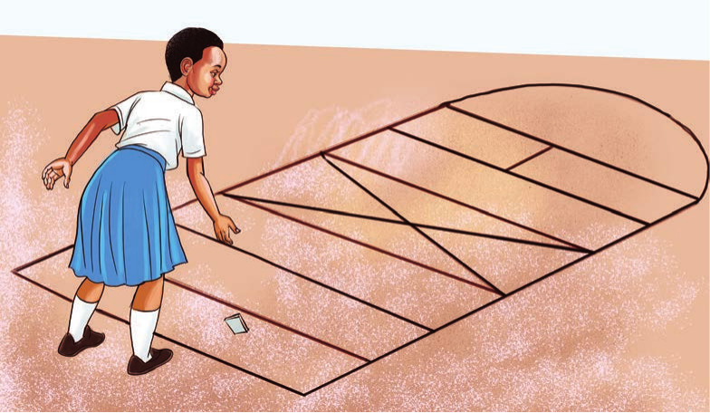
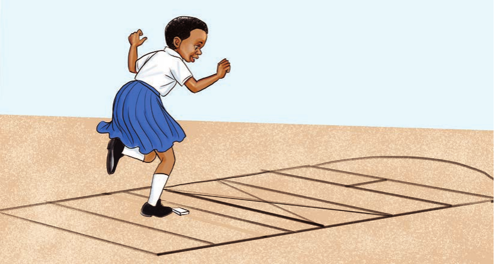
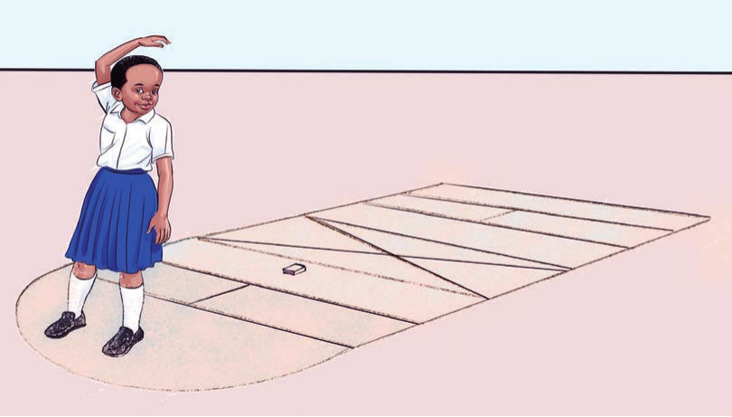

Tucheze mchezo
Kipande wa mguu mmoja
Mchezo huu huchezwa na watu zaidi ya mmoja kwa zamu.
Vifaa: Kijiti, chaki au mkaa wa kuchorea, na kigae cha kuchezea.
Jinsi ya kucheza
- Chukua kigae cha kuchezea.
- Rusha kigae katika chumba cha kwanza cha uwanja.

- Rukia chumba kilicho na kigae. Sukuma kigae kwa mguu mmoja hadi chumba cha mwisho.
- Ukifika mwisho, rusha kigae nyuma.


- Weka alama kwenye chumba kilichodondokewa na kigae.
- Chumba hicho kichorwe mstari.
- Mchezaji mwingine asikanyage wala kurusha kigae kwenye chumba hicho.
- Kigae kikienda nje au kikidondokea mstari, mchezaji amekosea na mwingine huingia.
- Mshindi ni mwenye vyumba vingi vilivyochorwa mistari.